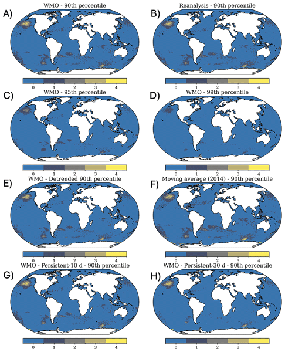
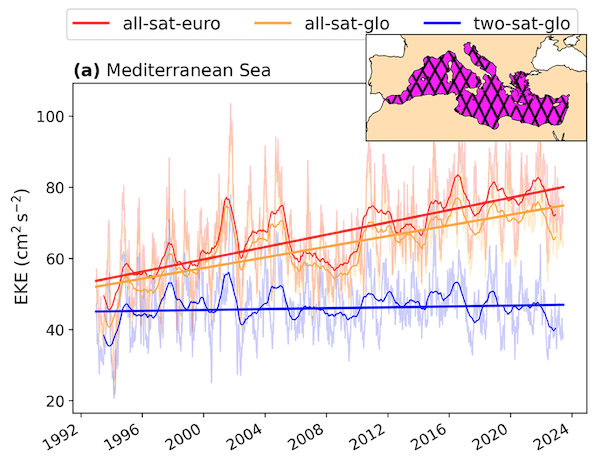

Peer-review activity
- Geophysical Research Letters - GRL: Reviewed 1 manuscript in 2026.
Submitted
[3] Combes, V., Fernández-Álvarez, B., Hargous, P., Hernán, G. and Pascual, A. (in review): Global Impacts of Sea Surface Temperature Uncertainty on Marine Heatwave Characterization.
Published
2026
[2] Hayward, A., Dasgupta, N., McAdam, R., Payne, M. R., Raj, R. P., Bonino, G., Chatterjee, S., Combes, V., Denaxa, D., De Rovere, F., Englyst, P., Haapaniemi, V., Hargous, P., Hoyer, J., Joseph, K. A., Lopes, B., Oliveira, A., Paixao, J., Silva, F. , Surendran, S., Zegna-Rata, A. and Olsen, S.: Marine Heat Waves and Cold Spells – Multiple Analysis/Definitions (MHW-MAD): A Multi-Definition Global Marine Heatwave Database from Satellite Sea Surface Temperature Data. Earth System Science Data, 18, 7181–7197, 2026 DOI [PDF] ▶

Abstract
Marine heatwaves (MHWs) are prolonged anomalies of warm sea surface temperature (SST) that can disrupt marine ecosystems, physical climate processes, and human coastal activities. MHW definitions vary due to different stakeholders requirements, such as ecological scientists and climate scientists having differing yet specific thresholds and metrics. Here we introduce a new global database of daily MHW metrics: climatological baselines, threshold exceedances, SST anomalies, and categorical event classifications of severity, derived from the European Space Agency SST Climate Change Initiative (ESA SST CCI) climate data record (CDR; 1982–2021) version 3.0 and an extension from 2022–2024 provided as an interim climate data record (iCDR). Building on the widely used definition of MHWs, periods in which SST exceeds the local 90th percentile for 5 or more days, our database extends this framework by incorporating multiple baseline climatologies (including fixed 30-year periods and rolling 30-year windows, as well as the period for reanalysis 1993–2022), varied percentile thresholds (90th, 95th, 99th), and both raw and linearly detrended SST anomalies. We also implement alternative event duration criteria (minimum 10 and 30 d persistence) to classify longer-lasting warm events. In addition to warm extremes, we provide marine cold spell (MCS) indices derived from the 1st, 5th and 10th percentiles, enabling analysis of cold as well as warm ocean extremes within the same framework. All data products are provided at daily resolution on a 0.05° (∼ 5 km) grid, with outputs including daily climatological percentiles, SST anomalies and binary MHW flags with severity category indices. This comprehensive database provides a consistent foundation for detecting and analysing MHWs across time and space, enabling researchers to assess how methodological choices affect MHW characterisation. By offering multiple definitions in parallel, the database facilitates intercomparison studies and supports applications from climate monitoring and model evaluation to marine ecological impact assessment, thereby providing users with pre-made indices for extremes, with the ambition to be rolled out into the future with new data releases. The dataset is available at https://doi.org/10.5281/zenodo.21835325 (Hayward et al., 2026).
[1] Hargous, P., Combes, V., Barceló-Llull, B. and Pascual, A.: Eddy kinetic energy variability from 30 years of altimetry in the Mediterranean Sea. Ocean Science, 22, 549–564, 2026 DOI [PDF] ▶

Abstract
Mesoscale activity plays a central role in ocean variability, substantially influencing the mixing of biogeophysical tracers, such as heat and carbon, and driving changes in ecosystems. Eddy Kinetic Energy (EKE), a metric used for studying the intensity of mesoscale processes, has recently been shown to increase in regions of intense EKE worldwide. Strong EKE positive trends are observed, for example, in the principal western boundary current regions, such as the Gulf Stream, Kuroshio Extension, and the Brazil/Malvinas Confluence. In this study, we assess whether the Mediterranean Sea, known to be a hotspot for climate change impacts, also exhibits such intensification. Despite the high number of observational data and modeling experiments, there is a gap in understanding the long-term evolution of mesoscale dynamics and EKE trends in the Mediterranean Sea. This study investigates EKE trends in the Mediterranean Sea using daily geostrophic currents derived from satellite altimetric data. To test the robustness of the results, we compare EKE trends computed from three different gridded altimetric products: a global product derived from a stable two-satellite constellation (two-sat) and two other products (global and European) incorporating all available satellites (all-sat). While all products reveal a general increase in EKE in the Mediterranean Sea over the last three decades, the trends calculated from the two-sat product are significantly smaller than those computed from the all-sat products. We show that this discrepancy is strongly linked to the increasing number of satellites over time used to construct the all-sat data sets, which enhances both spatial and temporal coverage, and hence, their capacity to detect higher energy levels. To evaluate the fidelity of these gridded products in capturing EKE trends, we compare them with along-track data in high-energy regions of the Mediterranean Sea: the Alboran Sea and the Ierapetra area. These regions exhibit contrasting EKE trends: positive in the Alboran Sea and negative in the Ierapetra area. These findings highlight the importance of using altimetric products with a stable number of satellites constructed for climate applications when addressing long-term ocean variability analysis.